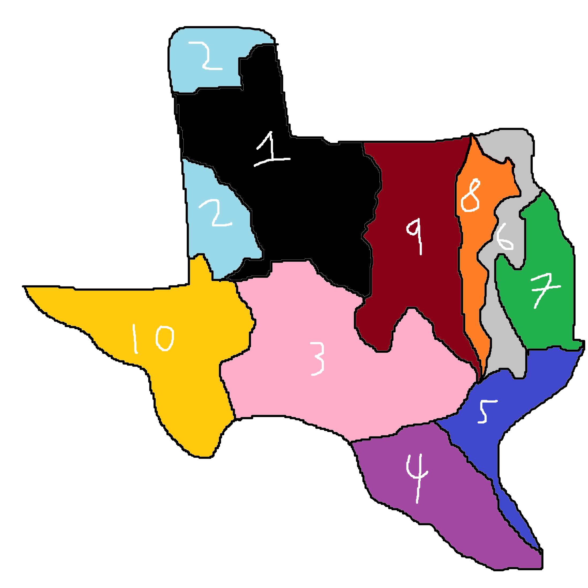

Here is a list of all the ecoregions in Texas
- Piney Woods
- Gulf Prairies and Marshes
- Post Oak Savannah
- Blackland Prairies
- Cross Timbers
- South Texas Plains
- Edwards Plateau
- Rolling Plains
- High Plains
- Trans-Pecos

- Rolling Plains (black)
- High Plains (light blue)
- Edwards Plateau (pink)
- South Texas Plains (purple)
- Gulf Prairies and Marshes (blue)
- Post Oak Savannah
- Piney Woods
- Blackland Prairies
- Cross Timbers
- Trans-Pecos
In-depth explaination of each ecoregion
Rolling Plains
Approximately one-third of the region is used for agriculture with a variety of different crops such as wheat, and cotton. Soils in Rolling Plains vary from fine sand to clays. Limestone ridges and steep terrains offer greater woody plant diversity and habitat for a diversity of wildlife species.
High Plains
Edwards Plateau
South Texas Plains
Gulf Prairies and Marshes
Post Oak Savannah
Piney Woods
Blackland Prairies
Cross Timbers
Trans-Pecos
Sources: Texas Parks and Wildlife